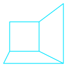
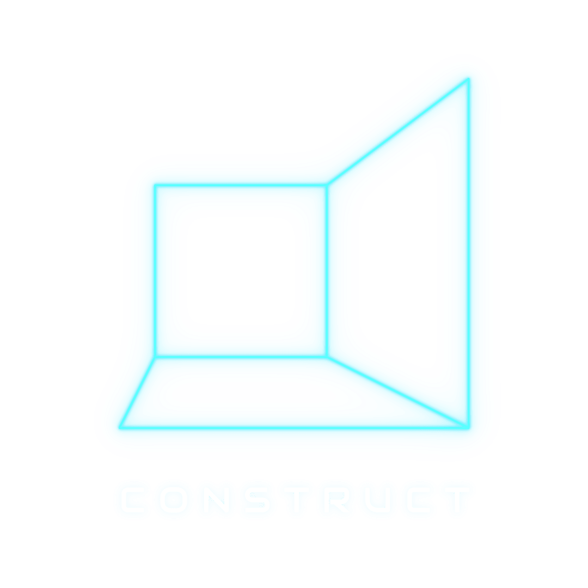
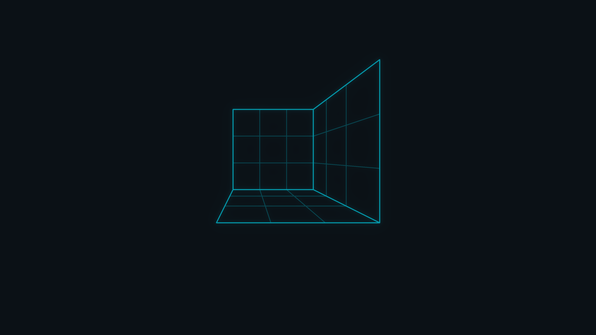
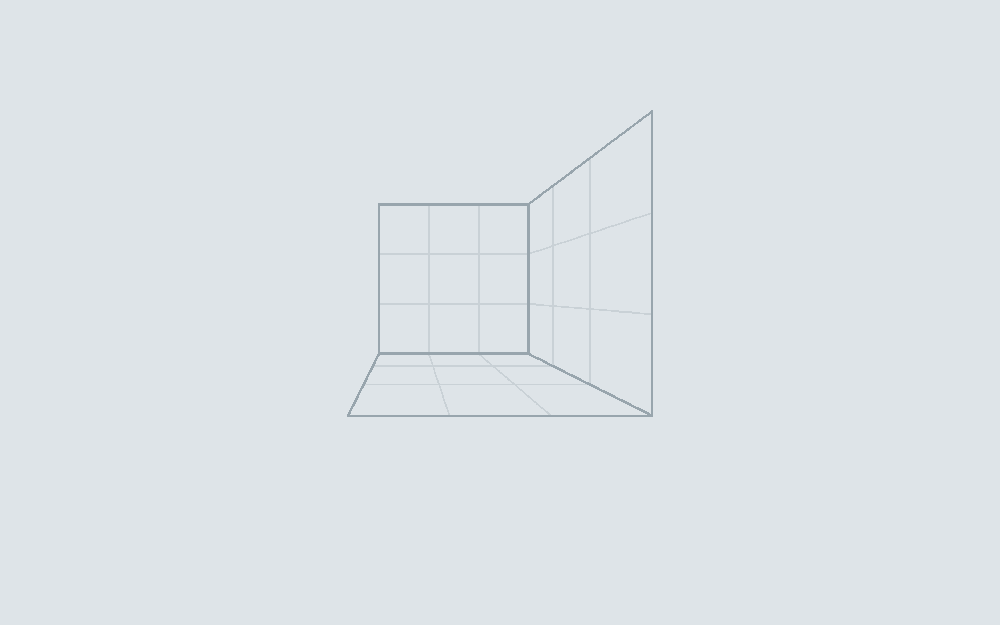

os
brand
Orchis-theme
tilingshell
CancelOpenDelete
Show hidden files Thumbnails ✓ Sort folders first
Copying 12 of 19 files · Show details

CONSTRUCT~/construct $ task palette contrast: 16.06 ok dark text on background 12.34 ok dark accent on background 4.70 ok light accent on background ~/construct $ sysupdate status image verified slot B next staged reboot to apply ~/construct $
Files on the left and the terminal on the right; the top bar and the bottom panel are GNOME Shell with Orchis, dash-to-panel and Vitals. The shell and the terminal stay dark in both modes, as Orchis' dark top bar does. The cursor is the Bibata shape in the cursor colors; the folders are Tela's in the folder color.
Quick settings and the calendar open, and the volume OSD: GNOME Shell's menus on the raised surface, ringed in the border colour. The desktop under them is the wallpaper's ink - their own colour before, which no shadow could lift them from.



| Repository | Takes | From |
|---|---|---|
| Orchis-theme | accent, border and semantic colors per variant, background scale, the shell's menus on h, Activities icon | palette/construct.scss, logos/construct-activities.svg |
| Tela-icon-theme | folder and glyph color, a construct variant | palette.toml (icons), recolored in the sources |
| Bibata_Cursor | Bibata-Modern-Construct and -Right | palette.toml (cursor), build.py's COLORS |
| tilingshell, dash-to-panel | highlight color | dark.accent (gsettings override in os) |
| Vitals, caffeine, clipboard-indicator, appindicator, gsconnect | nothing of their own: the shell theme draws them | - |
| libadwaita apps | the nearest fixed accent | gnome.accent = teal |